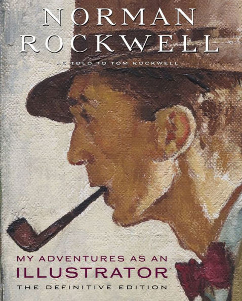

نورمان راکول
بیشتر جنبه های جامعه آمریکای قرن بیستم عمدتاً به صورت کمدی توسط Norman Rockwell هنرمند بزرگ این دوران به تصویر کشیده شده هست. او یکی از مشهورترین هنرمندان آمریکایی قرن گذشته محسوب میشود. هنرمندی که در ابتدا طراحی های ساده ای را ارائه میکرد و اوایل بیشتر برای طراحی کاور مجله Saturday Evening Post بود که شناخته شد